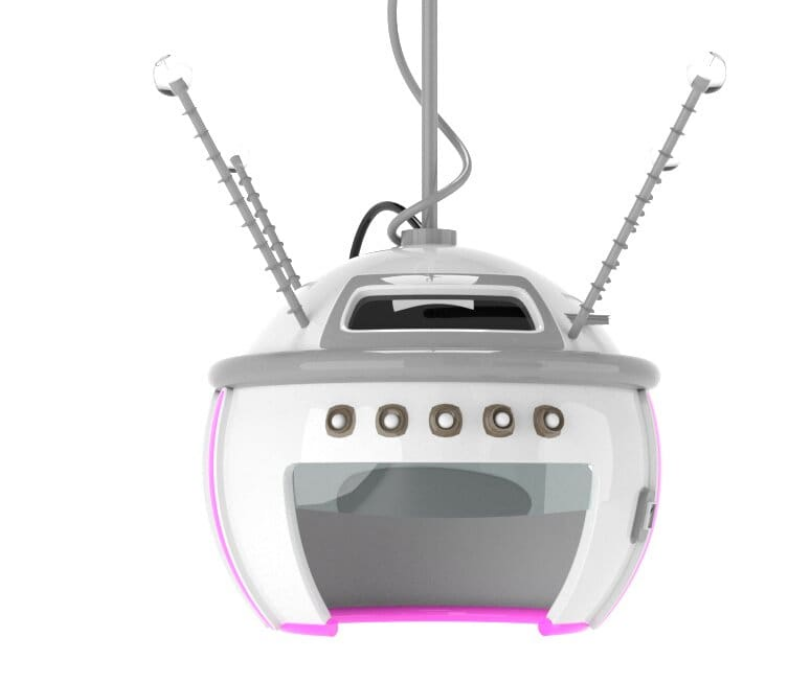

WHO ARE WE?
Positron is a place where
we «charge» with positive
to everyone who is sad,
tired or empty.
MOLECULE
OF POSITIVE
In 2021, scientists, through
experiments with electricity,
discovered a new chemical
element. It name is "Pozitron" (Pz).
The molecule of this
substance consists of 9 atoms,
each of which has its own
electrical potential. Through
research, we can control
electricity at the atomic level.
THE HELMET

We created a special helmet
to «charge» with a certain
emotion. The device attracts
positron molecules and passes
through a person.
THE BOOK